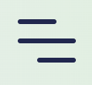
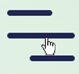
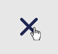

IDM 241 Beta Description
Trigger
- Hover over hamburger menu lines
- Hover over menu items
- Hover over menu X icon
Rules
- On menu hover, cursor changes to pointer
- On menu item hover, cursor changes to pointer
- On X hover, cursor changes to pointer
- On hover of clickable item (hamburger menu lines, menu items, and menu close "X" symbol), item scales up in size by 10%
- On hover of hamburger menu lines and menu items, color changes to blue
- On hover of "X" symbol, color changes to red
- Off hover of clickable menu item, item scales down in size by 10% and color changes back to default black
Feedback
- On hover of clickable item, cursor changes to pointer
- On hover of clickable item (hamburger menu lines, menu items, and menu close "X" symbol), item scales up in size by 10%
- On hover of hamburger menu lines and menu items, color changes to blue
- On hover of "X" symbol, color changes to red and item shakes
- Off hover of clickable menu item, item scales down in size by 10% and color changes back to default black
Loops/modes
- None
Microinteraction Visualization


